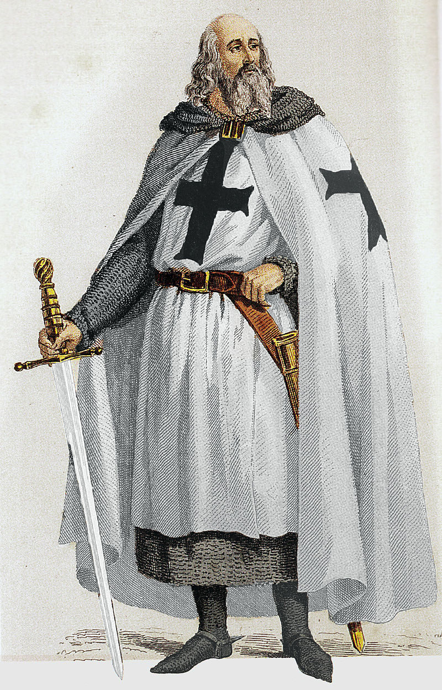

В 1291 году, когда крестоносцы были изгнаны из Палестины мамлюкским султаном Египта Халиль аль-Ашрафом, тамплиеры переключились на финансовые услуги[прим. 1] и торговлю, накопили значительные ценности и оказались в сложных имущественных отношениях с королями европейских государств и папой римским[1].
